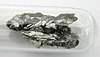

arsenic

Definition: Arsenic is a chemical element with the symbol As and atomic number 33. Arsenic occurs in many minerals, usually in combination with sulfur and metals, but also as a pure elemental crystal. Arsenic is a metalloid. It has various allotropes, but only the gray form, which has a metallic appearance, is important to industry.
Source: Wikipedia
Wikipedia Page
Wikidata Page